用 Typora 整理笔记真香啊。
概论：
1. IO 系统组成
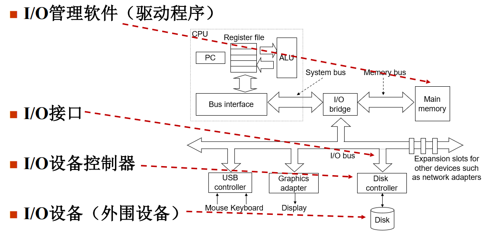
- IO 设备：鼠标、键盘、显示器
- IO 设备控制器：完成了对硬件实现的抽象（例缓冲数据、控制磁头
- IO 接口：编写端口地址，实现数据交换
- IO 管理软件（驱动程序）：对应驱动与其交互
2. IO 的传输两阶段
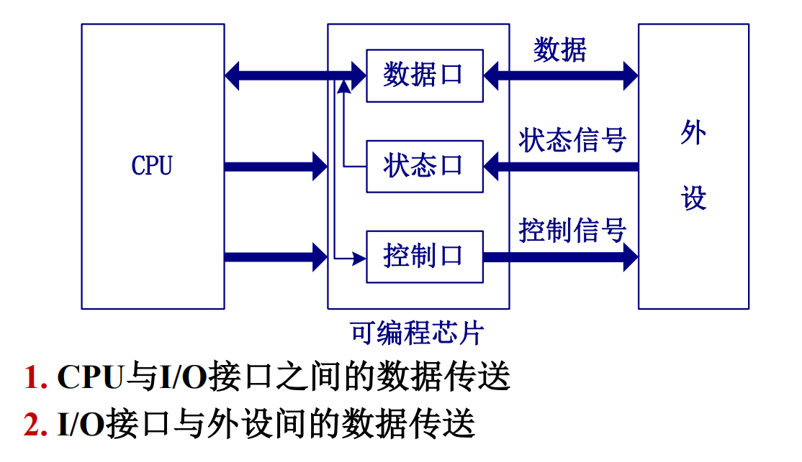
3. 数据传送方式
-
外设种类繁多，而不同种类的外设 数据传输速率差别很大
-
高速CPU与速度参差不齐的外设怎样在时间上同步呢？
解决办法是在CPU和外设之间数据传送时，选择适当的定时方式
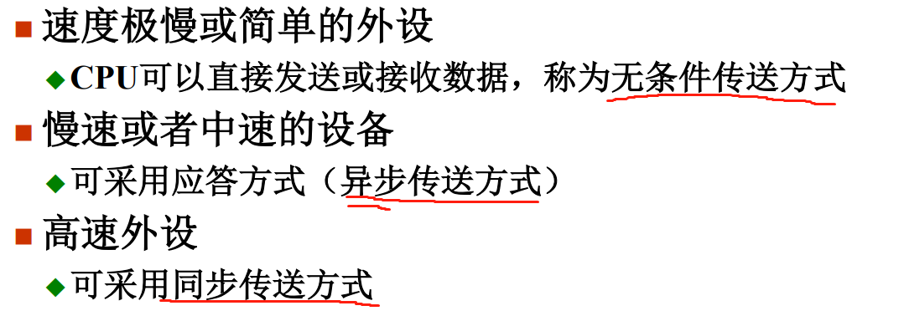
数据传送方式：
1. 无条件传送方式
- 最简单的 IO 方式，传送时不携带条件（外设始终处于就绪状态）
- 可以直接通过数据库输入、输出；
- 可能出现丢失数据、覆盖数据或重复输入的情况（由于外设很慢；
- 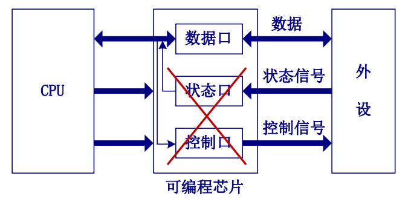
2. 程序查询方式
- 在 IO 之前查询 外设状态 ，从而控制数据何时进行 IO.
- 快速的 CPU 和低速的外设进行交互时，更多是一种串行的执行方式，会花销过多的时间查询、等待；
- 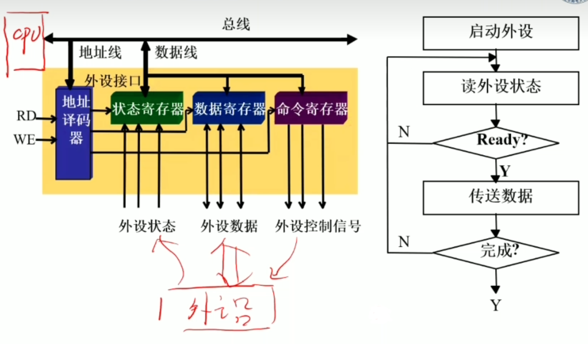
3. 程序中断方式
- 当外设需要CPU服务时，通过接口向CPU发出中断请求（IO）；
- CPU在当前机器指令执行完毕后暂停正在执行的主程序，转去执行中断服务程序；
- 提高了外设与 CPU 工作的并行性；但中断频率高的时候会阻塞执行；
- 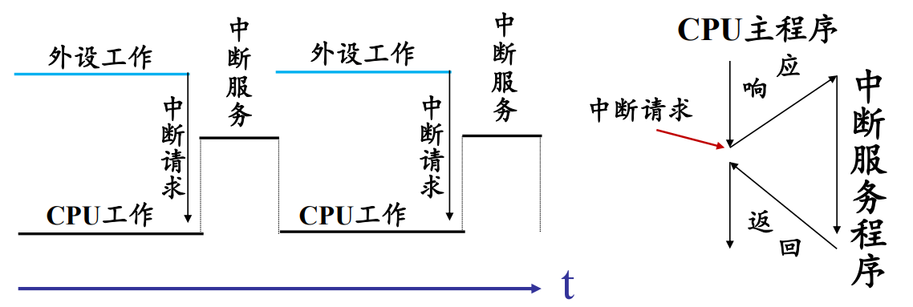
4. DMA 方式
-
直接存储器访问 DMA （Direct Memory Access）方式是为在主存储器与 IO 设备间高速交换批量数据而设置的
-
基本思想是：通过硬件控制实现主存与 IO 设备间的直接数据传送（通过 DMA 控制器），在传送过程中 无需CPU的干预，从而加速；
5. 通道方式
- 随着 DMA 的设计愈发复杂，我们把他分成了若干 通道，各个通道完成与不同 IO 设备的交互；
- 可以把通道看做一种具有特定功能的简单处理器，它具有自己的指令和程序，专门负责数据输入输出控制；
- 通道与CPU分时使用主存，实现CPU内部处理与 IO 设备并行工作
- 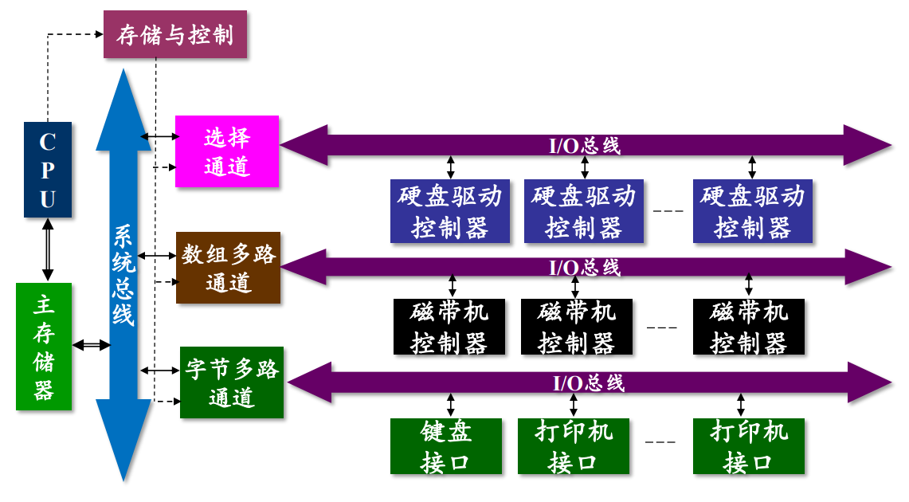
中断方式：
1. 概念
-
中断（Interrupt）是指CPU暂停现行程序的执行， 转去处理随机发生的紧急事件，处理完后再返回原程序中断位置继续执行的技术
-
中断源：能够向CPU发出中断请求的事件；
-
中断系统是计算机实现中断功能的软硬件总称，一般包括
- 在CPU中设置的中断机构：处理中断请求
- 系统中设置的中断控制器：如何管理多个中断源
- 软件上设置的中断服务程序
-
以中断方式实现 CPU 与外界进行信息交换的握手联络，实现CPU与外设的并行工作，例如异常处理、程序调度、软中断。
2. 中断处理

- 关中断/开中断：处理中断时执行 “关中断”，此时不允许其他中断执行；
- 有些时候也管 “中断周期” 叫做执行了一条 “中断隐指令” ；
3. 中断源识别
- 在单级中断中，采用 串行排队链 来实现具有公共请求线的中断源判优识别
- 采用 中断控制器 ，识别哪个设备发出的中断
- 转中断服务程序（基于中断向量）：
- 预先规定中断服务程序的入口地址（不管是哪个外设先执行公共服务程序，再进一步地寻找对应的中断服务程序）
- 通过查表方式找到入口地址（中断控制器获取中断向量交给 CPU，可以直接找到对应的服务程序）
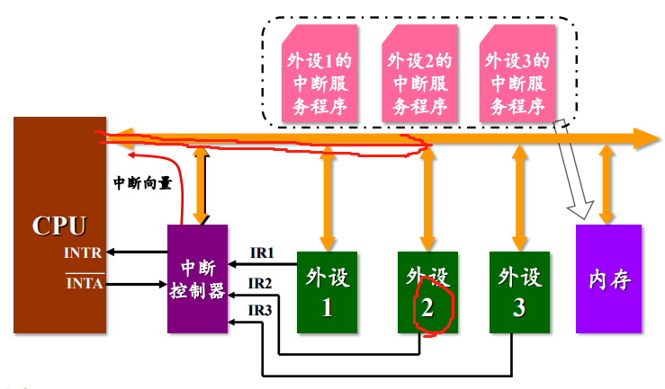
3. 中断的基本 IO 接口
程序中断由外设接口的状态和 CPU 两方面来控制。在接口方面，有决定 **是否向CPU发出中断请求 **的机构；在CPU方面，有决定 是否受理中断请求 的机构。四个标志触发器的具体功能如下：
- 准备就绪的标志(
RD)：一旦设备做好一次数据的接收或发送，便发出一个设备动作完毕信号，使 RD标志置“1”。在中断方式中，该标志用作为中断源触发器，简称中断触发器。 - 允许中断触发器(
EI，使能触发器)：可以用程序指令来置位。EI为“1”时，某设备可以向 CPU发出中断请求，反之意味着某中断源的中断请求被禁止。设置 EI 标志的目的，就是通过软件来控制是否允许某设备发出中断请求。 - 中断请求触发器(
IR)：暂存中断请求线上的由设备发出的中断请求信号。标志为“1”时设备发出了中断请求。 - 中断屏蔽触发器(
IM)：CPU是否受理中断或批准中断的标志。IM标志为“0”时CPU可以受理外界的中断请求，反之 CPU 不受理外界的中断。
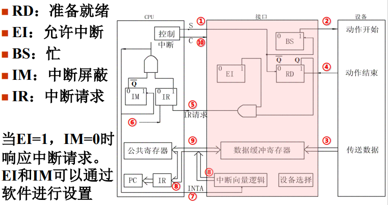
4. 单级中断
-
在同时处理多个中断时，其策略可分为单级中断和多级中断；
-
在单级中断系统中， 所有的中断源都属于同一级 ，所有中断源触发器排成一行，其优先次序是离 CPU 近的优先权高。当响应某一中断请求时，执行该中断源的中断服务程序。在此过程中，不允许其他中断源再打断中断服务程序，即使优先权比它高的中断源也不能再打断。
-
CPU 接收中断请求后其实是不知道是哪个外设发的，他会发出中断响应信号（
INTA），通常采用 串行排队链 的方式，来实现公共请求线上的中断源判优识别。 (见图一) -
由于存储器的地址码是一串布尔量的序列，因此常常把地址码称为 **向量地址 **。当CPU 响应中断时，由硬件直接产生一个固定的地址(即向量地址),由向量地址指出每个中断源设备的中断服务程序入口，这种方法通常称为 向量中断 。(见
图二，展示了中断向量的产生逻辑图) -
但是这种串行的中断处理对于故障十分敏感！ 一旦排队链上某个外设出问题了那基本就废了。
-
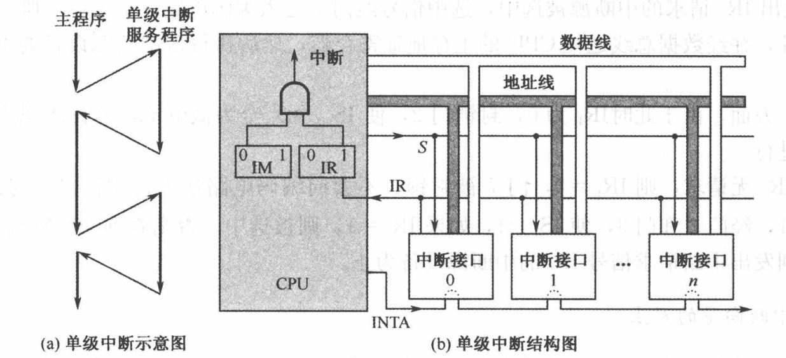
-
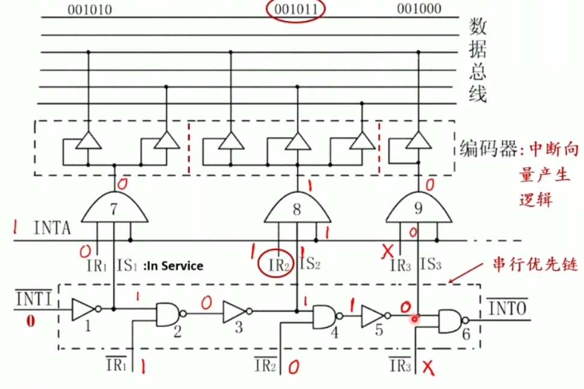
5. 多级中断（中断嵌套）
- 在多级中断中，优先级高的中断可以打断优先级低的中断，以程序嵌套的方式工作。在多级中断中，会先执行低优先级的中断，并可以被高的打断。
- 一个系统若有n级中断，在CPU中就有n个中断请求触发器（
IR），总称为中断请求寄存器；与之对应的有 n 个中断屏蔽触发器，总称为中断屏蔽寄存器（IM）。 - 多级中断中的每一级可以只有一个中断源，也可以有多个中断源。在多级中断之间可以实现中断嵌套 ，但是同一级内有不同中断源的中断是不能嵌套的，采用串行排队链的链式查询
- 除了有中断优先级排队电路确定优先响应中断级外，还要确定优先响应的中断源，一般通过链式查询的硬件逻辑来实现，实现了 *独立请求方式 与链式查询方式相结合 ** ；
- 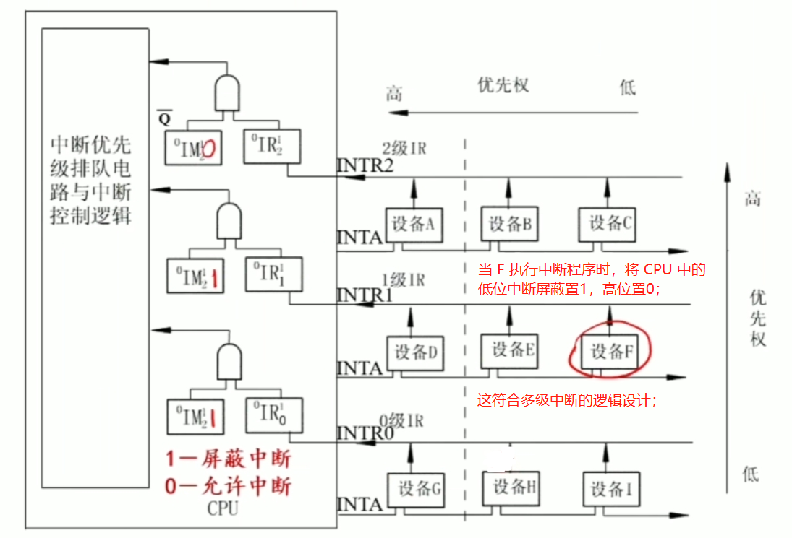
6*. 独立请求方式
- 为了避免串行处理的故障，设计了 “独立请求方式” 的中断优先级排队的逻辑结构。
- 每个中断请求信号保存在“中断请求”触发器中，经“中断屏蔽”触发器控制后，可能有若干个中断请求信号IR进入虚线框所示的 “排队器” 。排队电路在若干中断源中决定首先响应哪个中断源，并在其对应的输出线IR上给出“1”信号，其他线为“0”信号（即 ~ 中只有一个信号有效）。
- 之后，“编码器” 根据排上队的中断源输出信号 R，产生一个预定的地址码，转向中断服务程序入口地址。
- 多级中断中，如果每一级请求线上还连接有多个中断源设备，那么在识别中断源时还需要进一步用串行链式方式查询。这意味着要用二维方式来设计中断排队逻辑。
- 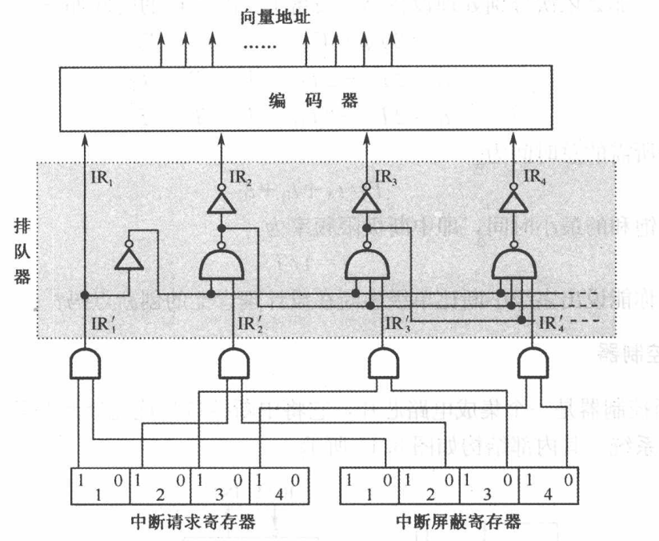
DMA 传送方式：
-
直接内存访问（
DMA），是一种完全由硬件执行 IO 交换的工作方式。在这种方式中 DMA 控制器从 CPU 完全接管对总线的控制，数据交换不经过CPU，使其直接在内存和IO设备之间进行。 -
DMA 方式的主要优点是**速度快 **。由于 CPU 根本不参加传送操作，因此就省去了CPU取指令、取数、送数等操作。而相应地，DMA 控制器向内存发出地址和控制信号，修改地址，对所传送的字的个数计数；并最终用 中断方式或状态位方式 向CPU报告传送操作结束。
1. DMA 传送过程：
- 申请阶段：DMA控制器收到DMA传送请求后，向CPU发出总线请求信号，申请占用总线 ；
- 响应阶段：CPU 响应总线请求，释放总线（即断开数据总线），并回送应答信号 表示已让出总线（总线证实）；
- 数据传送阶段：DMA 控制器收到总线应答信号后，占用总线并完成以下工作。
- 分别向存储器和外设发出读/写控制信号；
- 完成数据传送操作；
- 修改地址记录传送字的个数（可能一次传送传不完，所以要记录传到哪里了）；
- 传送结束阶段：在规定字数传送完后，DMA 控制器向CPU报告传送操作结束，释放总线，CPU重新占用总线。
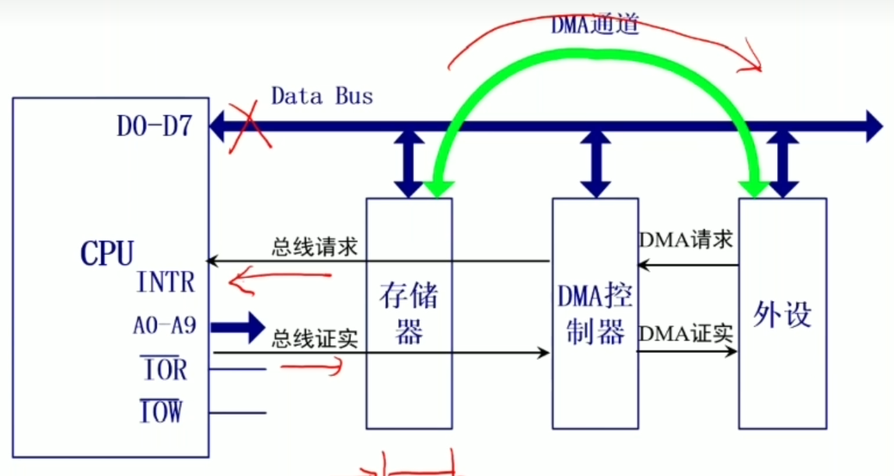
2. DMA 传送方式：
DMA 技术的出现，使得外围设备可以通过 DMA 控制器直接访问内存而不经过 CPU，与此同时 CPU 可以继续执行程序。那么 DMA 控制器与 CPU 怎样分时使用内存呢？
2.1 成组传送：
-
CPU 响应总线请求并让出总线后，DMA 控制器会把一组数据传送完毕，之后才把总线控制权交还给 CPU。
-
在 DMA 传送过程中，CPU 不能与内存交互，除了处理缓存的那点东西以外 处于摆烂状态；
-
优点：控制简单，它适用于数据传输率很高的设备成组传送；
-
缺点：CPU没有总线控制权，无法处理紧急事件，最好成组传送的数据块不能太大；
2.2 周期窃取 / 周期挪用
- DMA 控制器与主存储器之间传送一个数据 会占用 / 窃取一个CPU周期，然后 CPU 继续执行程序；
- IO 设备要求 DMA 传送时可能遇到两种情况：一种是此时CPU不需要访内，如CPU正在执行乘法指令，在缓存内执行即可；如果要求访内，则会发生冲突，在这种情况下 IO设备访内优先，意味着 CPU 延缓对指令的执行；
- 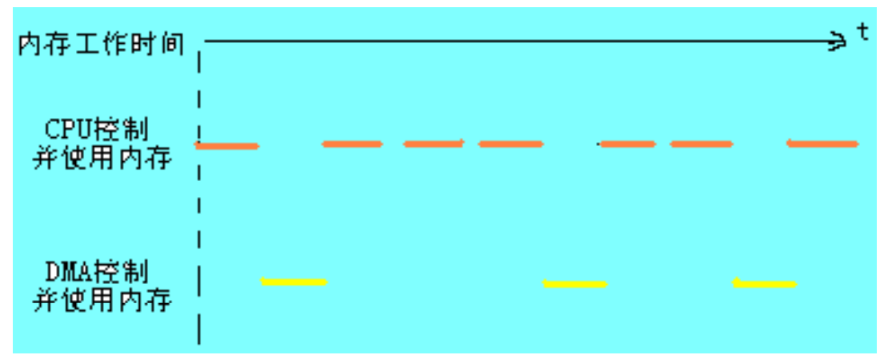
2.3 交替访存
总线使用权是通过 C1 和 C2 分时进行的。但 CPU 访存比 DMA 快得多，所以这种方式的效率极低，没啥用。
3. DMA 基本组成
- 内存地址计数器：内存当前地址指针。传送前，初值为内存缓冲区首地址，每传送一次数据，自动加1
- 字计数器：传送数据块长度计数，每传送一次数据，自动减1
- 数据缓冲寄存器：采用从存储器到存储器传送方式时，暂存每次传送的数据
- 控制/状态逻辑：完成控制功能
- 中断机构：传送结束信号。表示DMA传送过程结束，可向CPU发出传送结束请求。
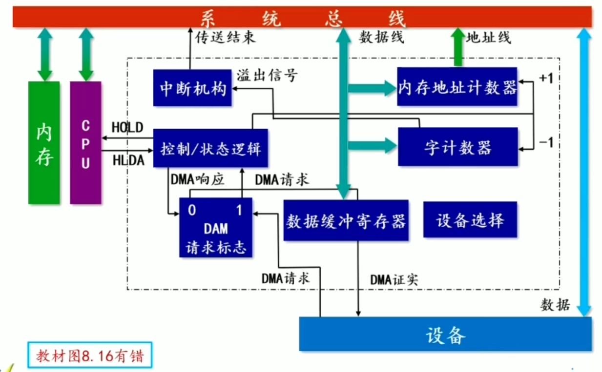
*外设应该是得挂载到数据总线上的。
4. DMA 数据处理过程
传送一个数据块可以分为三个阶段。
- 预处理：CPU对DMA控制器 预置初值，读取状态和设置传送需要的有关参数。
- 数据传送：DMA控制器控制 外设与主存之间的数据交换。
- 后处理：主要是对内存中缓冲区的处理（取走缓冲区中的数据或填入新数据，会分多次传输）。
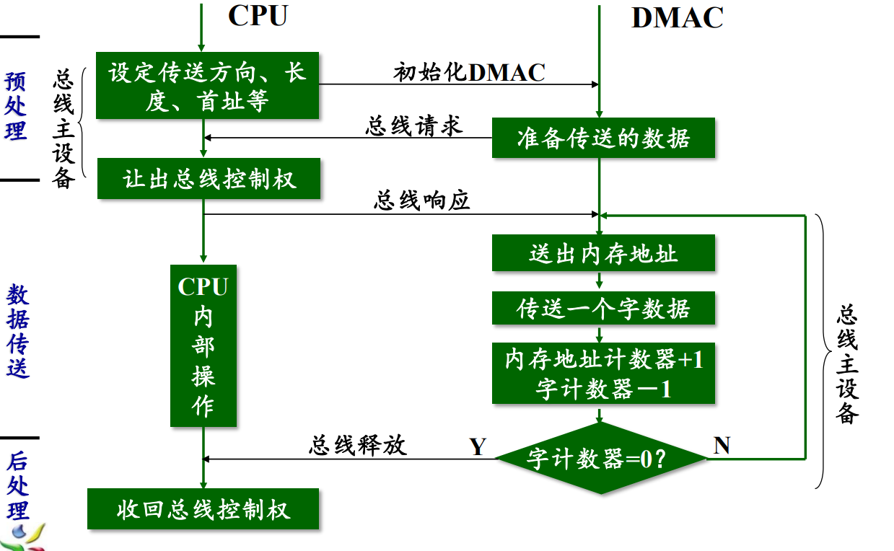
5. 选择型 or 多路型？
- 选择型：在某一段时间内 只能为一个设备服务，共用硬件；
- 多路型：DMA 控制器同时为多个慢速设备服务，设备间能以字节交叉方式进行数据传送；由于多路型 DMA 同时要为多个设备服务，因此对应多少个 DMA 通路(设备)，在控制器内部就有多少组寄存器用于存放各自的传送参数。
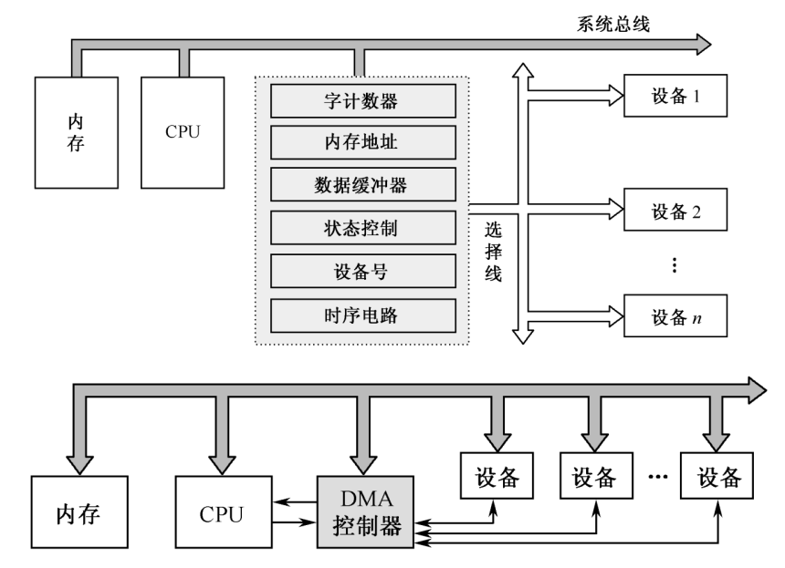
通道方式：
-
DMA控制器的出现已经减轻了CPU对数据输入输出的控制，使得CPU的效率有显著的提高。
-
通道的出现则进一步提高了CPU的效率，这是因为通道是一个特殊功能的处理器，它有 自己的指令和程序 专门负责数据输入输出的传输控制，而CPU将“传输控制”的功能下放给通道后，只负责“数据处理”功能即可。
相当于对于传输控制加了一层抽象/接口。
-
这样，通道与CPU分时使用存储器，实现了CPU内部运算与I/O设备的并行工作。

通道类型：
1. 选择通道
选择通道又称高速通道，在物理上它可以连接多个设备，但是这些设备不能同时工作在某一段时间内通道只能选择一个设备进行工作。
选择通道很像一个单道程序的处理器，在一段时间内只允许执行一个设备的通道程序，只有某设备的通道程序执行完毕后，才能执行其他的通道程序。
2. 多路通道
多路通道又称多路转换通道，在同一时间能处理多个 IO 设备的数据传输，即在一段时间能交替执行多个设备的通道程序。
多路通道又分数组多路通道和字节多路通道（密密麻麻全是字儿）。数组多路通道把字节多路通道和选择通道的特点结合起来。